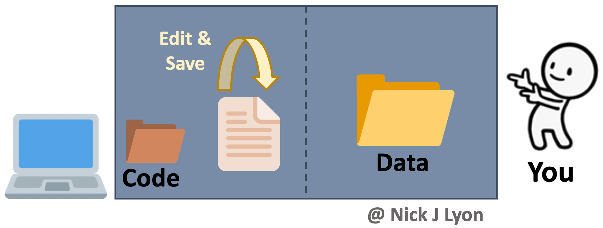

Workflow Options
Overview
If you have worked on any file that requires iterative edits, you have had to develop a workflow to approach that task. This could be a scientific paper, analytic code, or a presentation. There are many possible ways you could approach this task leveraging any number of software and hardware options but before we get into our discussion today about collaborative research using GitHub we would like to–briefly–outline two of the typical forms these workflows can take and how they fit into a broader framework of individual and synthesis science.
Individual Workflow
At its simplest, you could be storing your data and code on your local machine and doing the entirety of your work alone. When working on your code you would iteratively edit and save the same code file and you would have a static folder (or folders) for data that you added to as you collected and entered or downloaded additional data.
There are variants of this where you may be archiving everything on your hard drive (e.g., Time Machine on Mac OS, etc.) and you may be using a “save as” feature to preserve some iterations of your code. You may also perform this same operation within a cloud-based storage system (e.g., Box, Dropbox, Google Drive, etc.) so that some versions of both code and data are preserved implicitly based on time stamps.
This approach has the advantage of relatively few moving parts but risks losing all previous versions that aren’t explicitly preserved (as well as a record of the changes from version to version).
Another limitation of this approach is that to work collaboratively, everything would need to be manually shared with your collaborator(s) which introduces a significant risk that someone in the research team would accidentally use the “wrong” version of either the code or the data.

Data Lifecycle Considerations
The above approach works when doing largely individual research, but what about at other stages in the typical life cycle of data? Said life cycle is displayed below where data are acquired via planning and collection, assessed and preserved, and finally, synthesized and used to inform future plans and collection.
Individual workflows performed by a small research team can be well-served by the relatively bare-bones workflow illustrated above but such projects often emphasize data acquisition and preservation over synthesis and thus are not as limited by a need for real-time collaboration on coding scripts across a team. Individual projects certainly do data synthesis, they just by their nature have to emphasize data collection at least as much as the synthetic components of research.
However, for larger teams–especially those that span disciplinary boundaries or have ongoing data collection protocols (e.g., research coordination networks, working groups, etc.)–the synthesis part of the data life cycle often becomes progressively more important. This importance is tightly linked to a need for collaboration among team members on wrangling, analysis, and visualization scripts that in individual workflows can be managed by a single team member but cannot be in synthesis projects.
Collaboration on coding can be accomplished by manually sharing code and data among group members but there are programs and websites that are specifically dedicated to meeting the need for collaboration. One example is “version control” systems (e.g., GitHub, SVN, etc.) that provide a framework for reproducible group work.

Synthesis Workflows with Version Control
Version control systems preserve the iterative changes you and your team make to code and allow for informative titles and messages to be attached to these snapshots. This offers a clear advantage over ambiguous time-stamped versions preserved by cloud storage systems as it facilitates re-visiting code long after or by new team members who were not present for the initial writing. This approach is what we will be covering in greater depth in a few moments but the broad strokes are that you would preserve the history of your work and ensure that everyone uses the “right” version of the code.
However, despite its advantages for collaborative coding, version control is not meant for preserving data so you would still need to share data with your collaborators either via email or by storing data in the cloud and sharing links with team members. This shares the risk of the individual workflow of members using the wrong version of the data but this method ensures all team members are using the correct code.

To Summarize:
While each approach offers its own strengths and weaknesses, in our experience many scientists avoid version control workflows due to knowledge barriers for getting set up rather than disagreements with the practicalities of version control.
Today, we will strive to cover the fundamentals of using a version control system to empower you to at least consider this structure as an option going forward.
Please don’t hesitate to ask questions and remember that this link is a resource that you should feel free to refer back to if you ever need a refresher (or wish to teach peers)! There is a supplementary appendix at the end of this document that is intended to help you set up version control with Git, GitHub, and RStudio should that be of interest.